Обработка выгрузки по вакансиям с портала Работа в России
С портала Работа в России по ссылке https://trudvsem.ru/opendata/datasets скачивается файл c вакансиями в формате csv для вашего федерального округа.

После обработки с помощью программы создается файл в формате xlsx(Excel) в котором в удобном для работы виде отображены вакансии для вашего региона
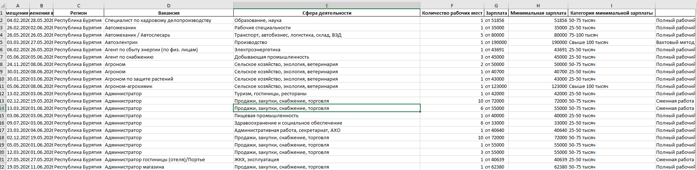
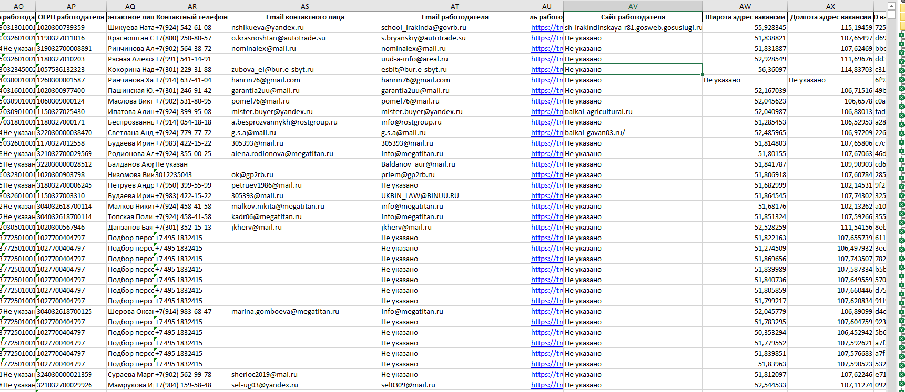
В файле находятся 7 листов с вакансиями отобранными по определенным условиям
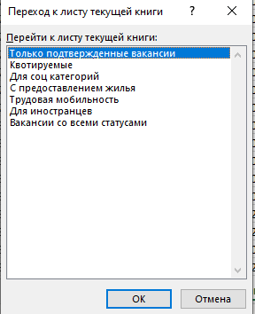
- Только подтвержденные вакансии - на этом листе находятся вакансии, у которых в колонке Статус проверки вакансии указано значение Одобрено;
- Квотируемые - на этом листе находятся квотируемые вакансии региона (вакансии, у которых в колонке Квотируемое место указано значение Квотируемое место);
- Для соц категорий - на этом листе находятся вакансии, у которых в колонке социально защищенная категория стоит какое-то значение (инвалиды, беженцы, родители инвалидов и т.п., граждане, уволенные с военной службы);
- С предоставлением жилья - на этом листе находятся вакансии, у которых в колонке Жилье от организации стоит значение Предоставляется жилье;
- Трудовая мобильность - – на этом листе указаны вакансии, у которых в колонке Программа трудовой мобильности указано значение Вакансия по программе трудовой мобильности;
- Для иностранцев - на этом листе указаны вакансии, у которых в колонке Для иностранцев указано значение Возможно трудоустройство иностранных граждан;
- Вакансии со всеми статусами - на этом листе указаны вакансии со всеми статусами включая отклоненные и т.п.
На основании списка размещенного на листе Только подтвержденные вакансии программа подсчитывает количество вакансий в разрезе:
- Отраслей
- Муниципалитетов
- Муниципалитетов и отраслей
- Отраслей и муниципалитетов
- Работодателей
- Образованию и отраслям
- Образованию и работодателям
- Графику работы и отраслям
- Графику работы и работодателям
- Типу занятости и отраслям
- Типу занятости и работодателям
- Квотируемые места по отраслям
- Квотируемые места по работодателям
- По соцкатегориям
- Требуемому опыту и отраслям
- Требуемому опыту и работодателям
- По отраслям и категориям минимальной предлагаемой заработной платы
- По работодателям и категориям минимальной предлагаемой заработной платы
Подсчитываются средние и медианные значения минимальной предлагаемой заработной платы
- По отраслям
- По работодателям и отраслям
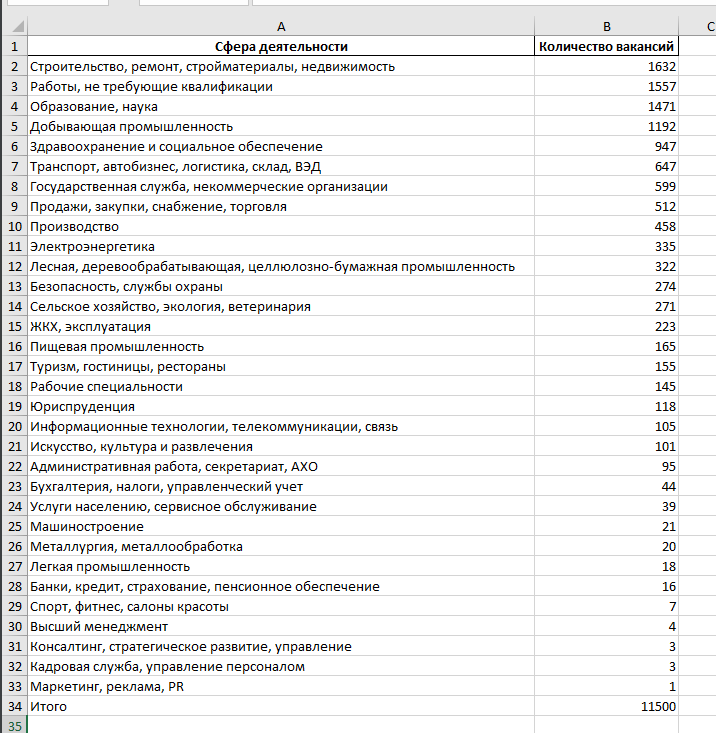
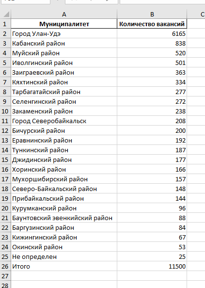
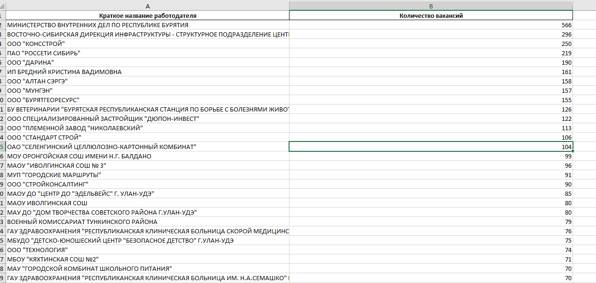
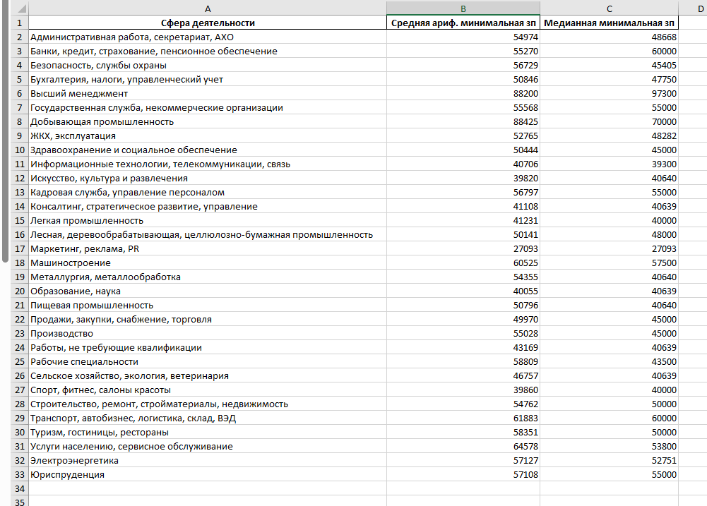
Аналогичная статистика создается на основании каждого из оставшихся листов (Квотируемые, для соц категорий, для иностранцев и т.д.)
Дополнительные опции при обработке выгрузки
Можно создать список работодателей для которых параллельно с основными будут создаваться файлы с вакансиями и статистикой только по выбранным работодателям.
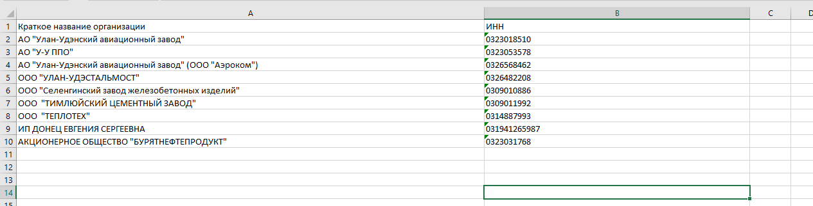
Можно создать список условий по которым будут отфильтрованы данные перед обработкой.
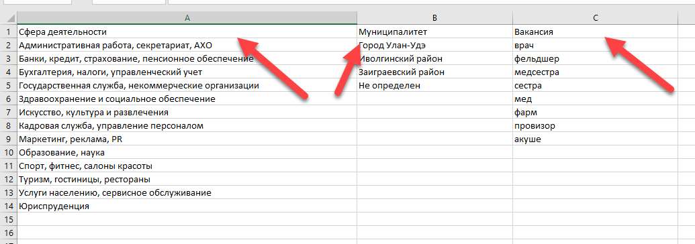
Например, если использовать файл показанный на скриншоте выше, то сначала будут отобраны все вакансии у которых в колонке Сфера деятельности указаны отрасли перечисленные в первой колонке, затем из отобранных вакансий будут отобраны те, у которых в колонке Муниципалитет встречаются перечисленные во второй колонке значения, после этого останутся только те вакансии у которых в колонке Вакансия встречаются указанные в третьей колонке значения. По оставшимся после такой фильтрации вакансиям и будет производиться подсчет статистики и создание списка вакансий.
Можно создать список со словами которые должны содержаться в названии вакансии, например врач, учитель, сварщик. В этот список во вторую колонку можно добавить слова которых не должно быть в названии вакансии. Программа параллельно с основными файлами будет создавать файлы где будут содержаться только отфильтрованные вакансии.
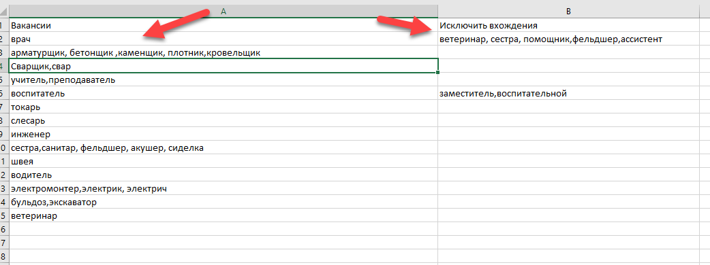
Сравнение изменений рынка вакансий по двум выгрузкам на основе аналитики, полученной с помощью Кассандры
Используя два файла со сводами по вакансиям за разные даты, можно получить разницу в количестве вакансий по отраслям, работодателям, муниципалитетам и т.п. Самое главное этот инструмент позволяет отслеживать изменения количества рабочих мест по конкретным вакансиям. Для каждого значения подсчитывается разница, абсолютная разница, изменение в процентах, процентное соотношение. Строки, где количество рабочих мест уменьшилось выделены оранжевым, где увеличилось зеленым.
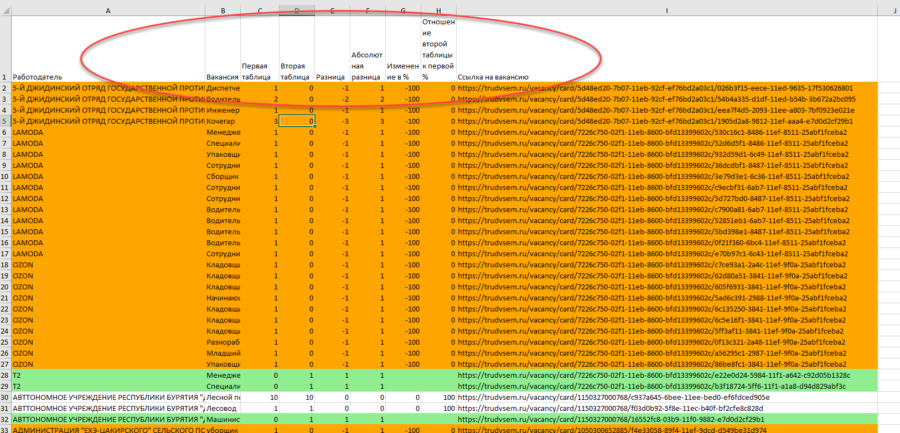
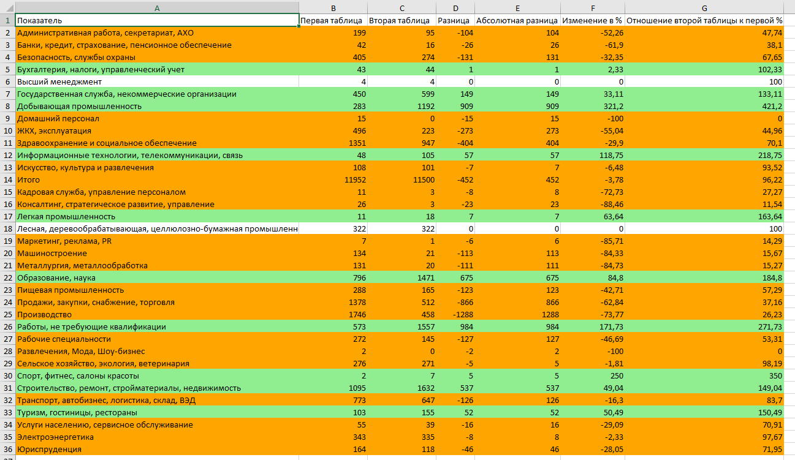
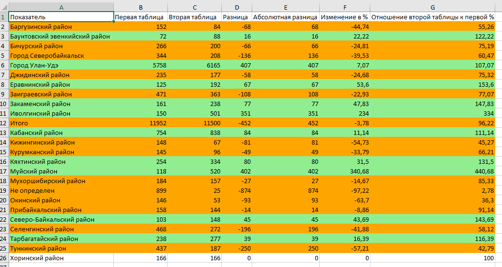
Создания временных рядов для отображения динамики изменения количества вакансий по основным показателям
На основании файлов созданных Кассандрой можно создать временные ряды для отслеживания динамики ситуации
с количеством вакансий по отраслям, муниципалитетам, работодателям, требуемому образованию, графику
работы, требуемому опыту и т.п.
Временные ряды создаются на основе 2 видов файлов создаваемых Кассандрой:
- Файлов сводов содержащих подсчеты количества вакансий в разрезе(отраслей, муниципалитетов, работодателей и т.п.)
- Файлов содержащих списки вакансий
Алгоритм обработки прост. В одну папку собираются файлы за интересующие вас даты. Файлы в названиях должны содержать дату в формате DD_MM_YYYY например 15_06_2026.
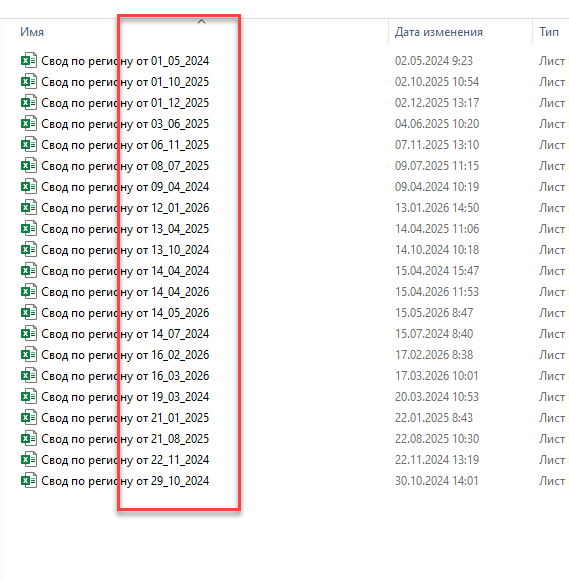
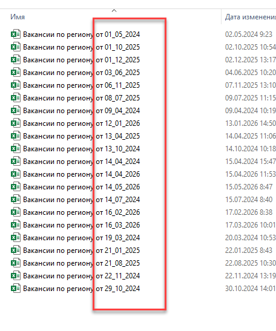
При обработке файлов сводов временные ряды создаются в трех видах:
Вертикальный вид, когда значения временного ряда расположены сверху вниз в хронологическом порядке
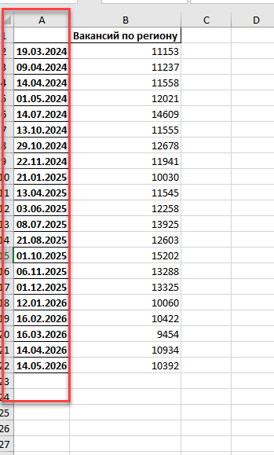
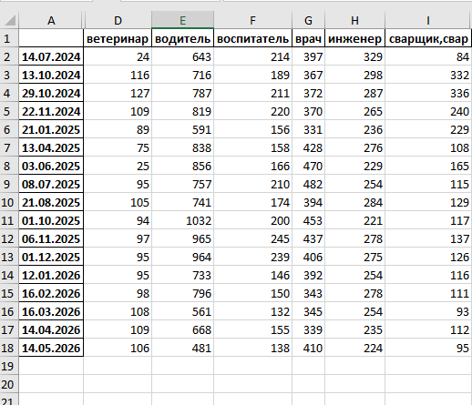
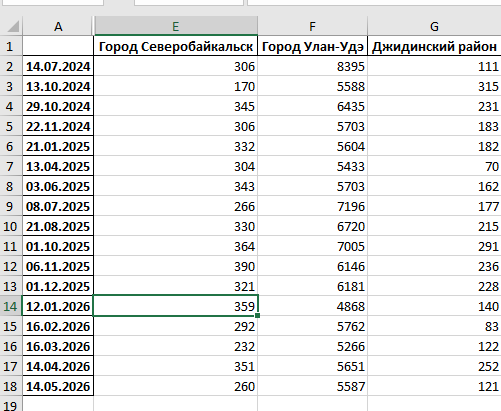
Горизонтальный вид, когда значения временного ряда расположены слева направо в хронологическом порядке
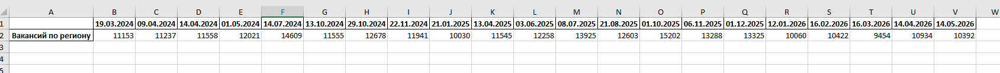
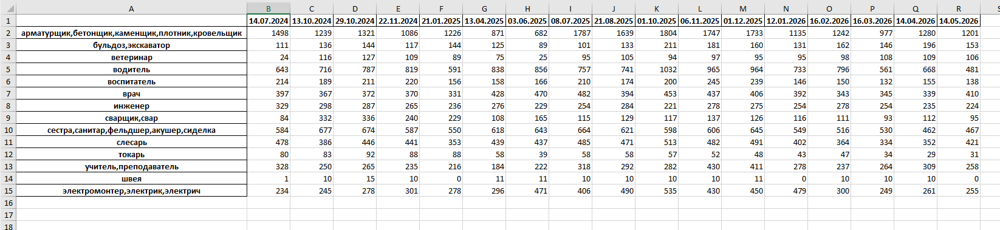
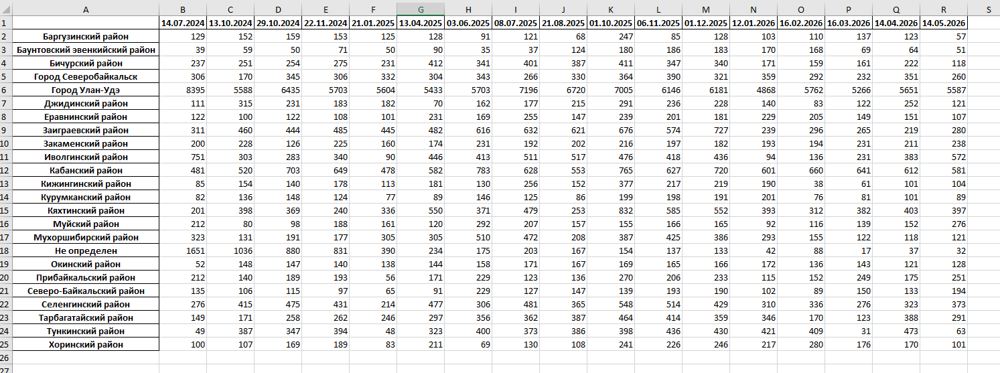
Для сводов, предназначенный для использования в сводных таблицах.
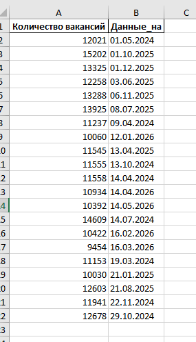
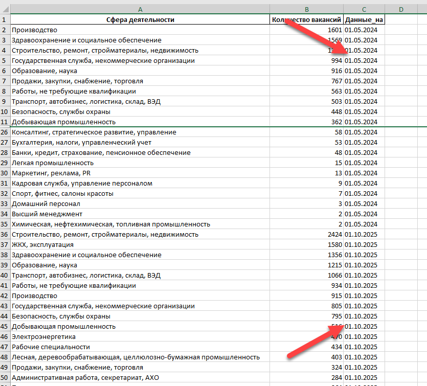
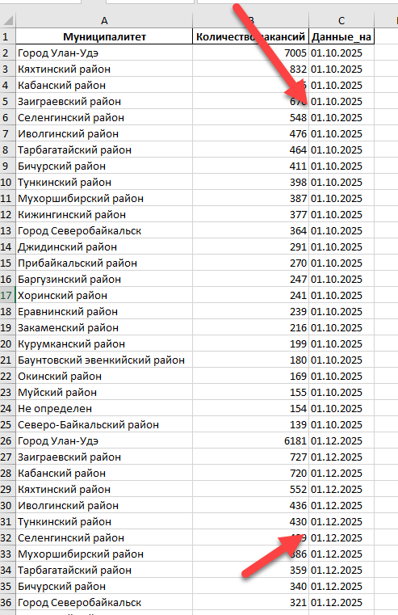
При обработке файлов содержащих списки вакансий происходит объединение этих списков в один большой список на основе которого удобно создавать сводные таблицы и дашборды. При использовании файла с отслеживаемыми вакансиями можно добавляется дополнительная колонка с названием отслеживаемой вакансии
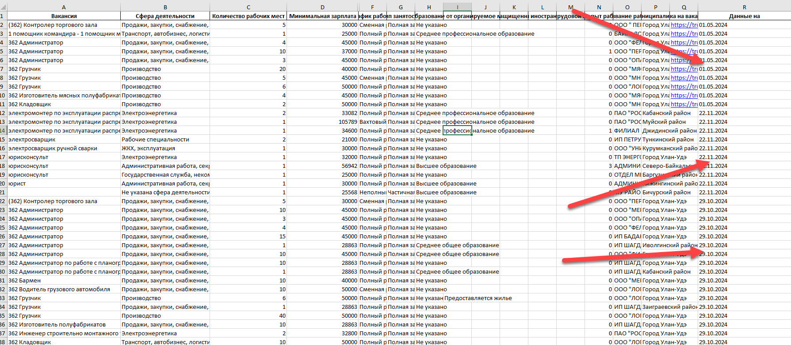
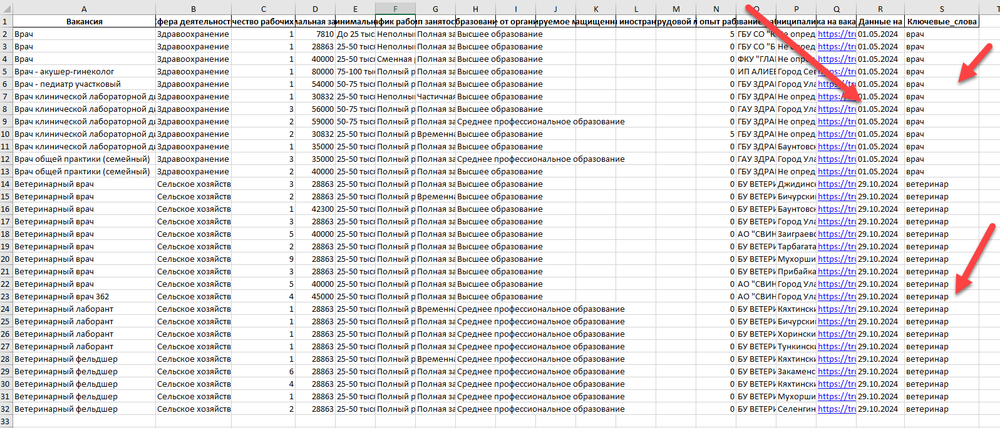
Поиск различий между двумя таблицами с одинаковой структурой
Обрабатываемые таблицы должны иметь одинаковое количество строк и колонок. Заголовок должен занимать одну строку и названия колонок должны совпадать.
Например, вам нужно найти разницу между отчетом за февраль 2026 и отчетом за июнь 2026 (какие показатели
и как изменились), Кассандра обработает таблицы и предоставит вам в удобном виде все различающиеся
показатели, а также насколько отличаются значения в абсолютном выражении и насколько они отличаются в
процентах (какова доля в процентах второго значения от первого, насколько в процентах изменились
значения).
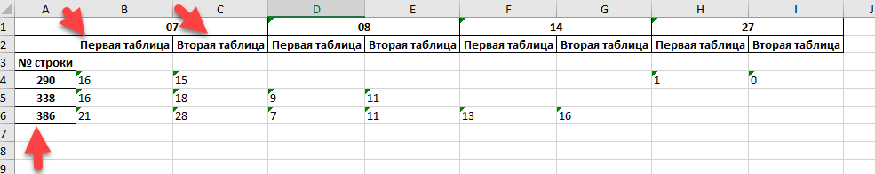
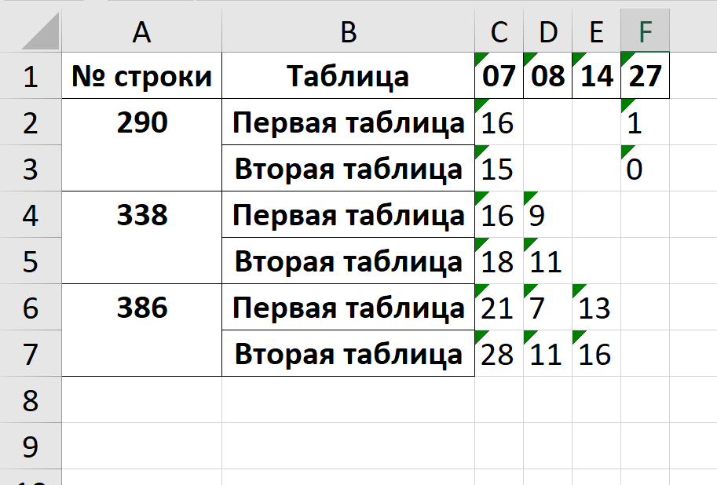
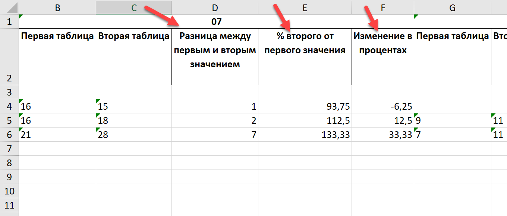
Обработка некоторых форм мониторинга трудоустройства выпускников (пятистрочная, нозологии 15 строк и т.п.)
С помощью этой функции обрабатывались некоторые формы отчетов по мониторингу трудоустройства выпускников. Так как сейчас большинство этих форм сбора не используется, данный функционал остается в программе по причине использования в региональных интересах.
Файлы от ПОО собираются в одну папку, при обработке программа находит ошибки и производит суммирование показателей для удобства работы ответственных за мониторинг
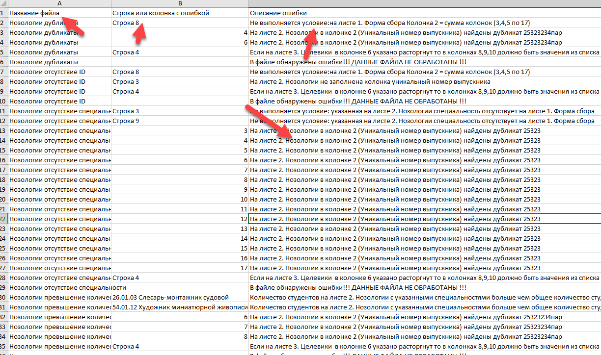
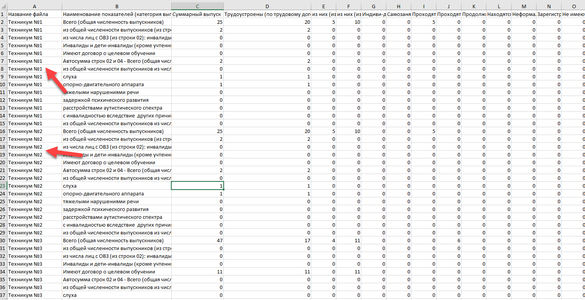
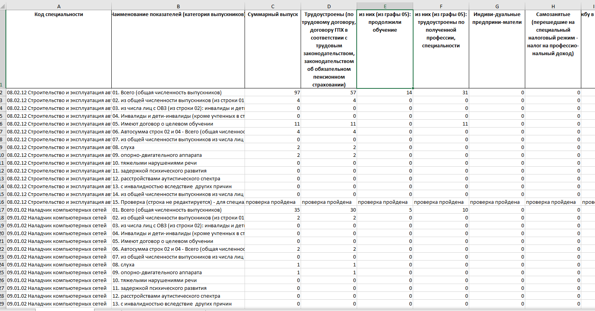